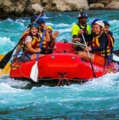
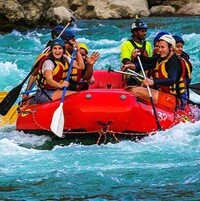
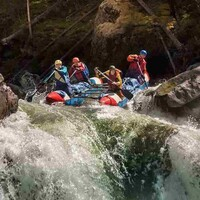
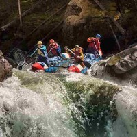

Splash! White Water Rafting

Welcome to Splash! White Water Rafting, where adventure meets the thrill of the rapids. Our team of experienced guides is dedicated to providing you with an unforgettable rafting experience. Whether you're a beginner or a seasoned rafter, we have the perfect trip for you. Join us and make memories that will last a lifetime!
 

 
